2025.06 – 2025.08 · 实习
产品设计助理
天津瑞利通科技有限公司
调研工业控制机箱竞品，深化 3 套外观方案。配合结构团队调整面板、散热与工艺细节，参与零件建模、装配图和 BOM 整理。
我是张国凤。这里收录我的工业设计、交互设计和研究作品。
Career experience
2025.06 – 2025.08 · 实习
天津瑞利通科技有限公司
调研工业控制机箱竞品，深化 3 套外观方案。配合结构团队调整面板、散热与工艺细节，参与零件建模、装配图和 BOM 整理。
2024.06 – 2024.08 · 实习
济南笑开研教育科技有限公司
从零搭建考研教育 B 站账号，负责选题、制作与发布，并参与小红书账号定位与引流。
2022.09 – 2023.08
山东昊研电子科技有限公司
设计建筑设备的注塑件与钣金件，优化楼层呼叫机和警示灯的装配流程。在既有帽体模具约束下，改进智能安全帽的连接与内部布局。
About & education
我的研究关注用户研究、包容性设计与 TRIZ 方法。工业设计和工程训练让我能够同时考虑使用需求、产品表达与装配约束。
2024.09 – 2027.06
工业设计工程 · 硕士
2018.09 – 2022.06
工业设计 · 本科
Tools & capabilities
Selected work
点选杂志封面，在桌面翻阅。封面 420 × 297 mm · 跨页 840 × 297 mm

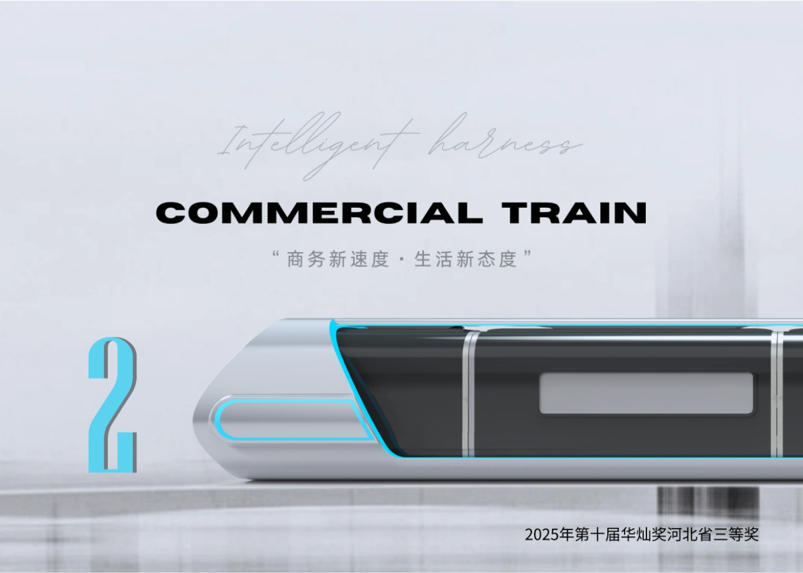

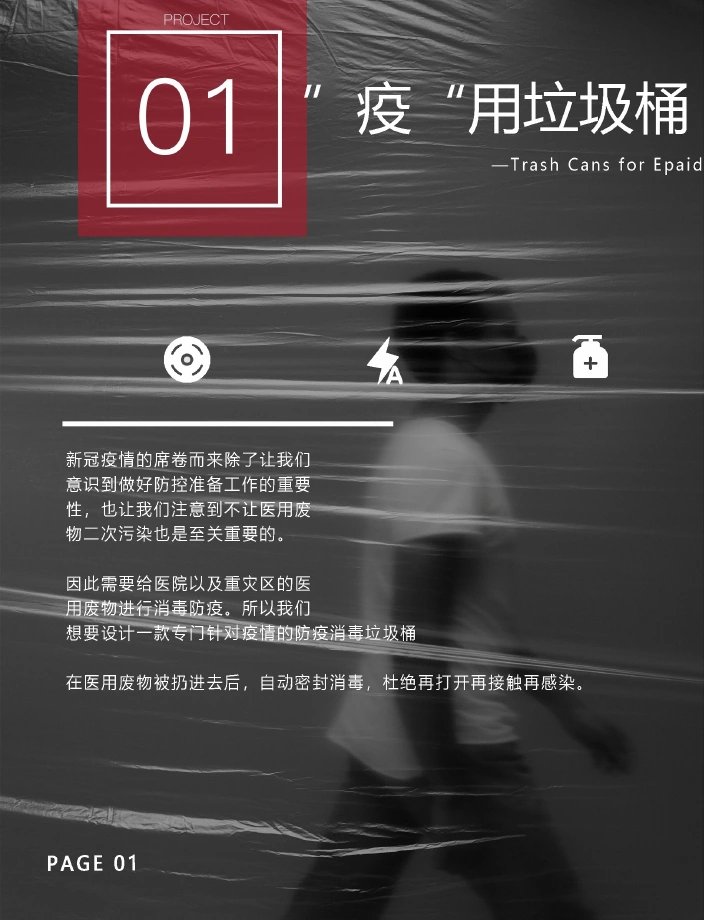
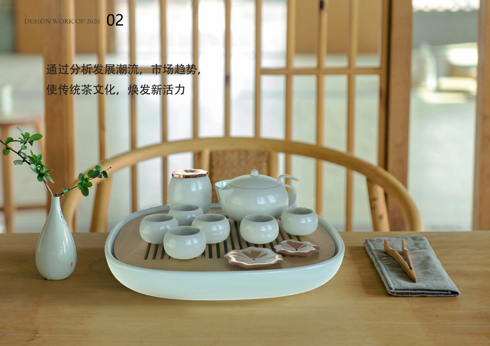

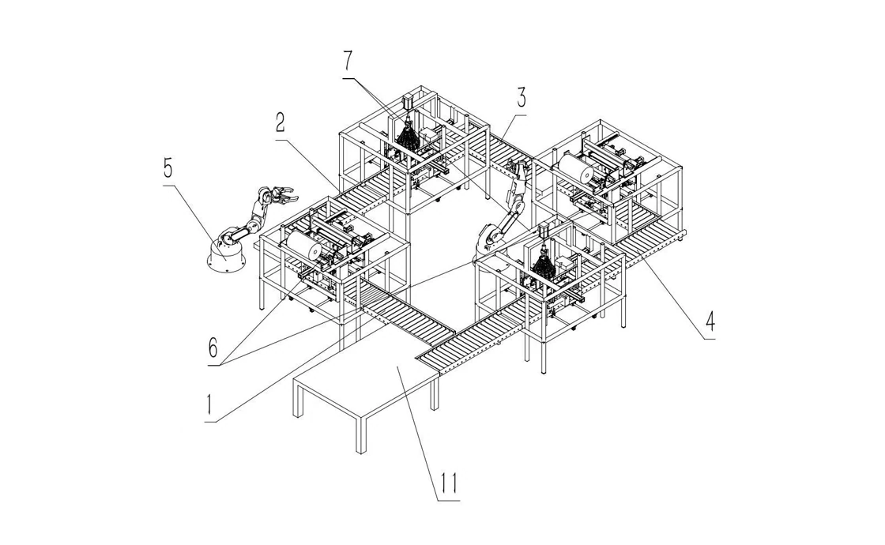
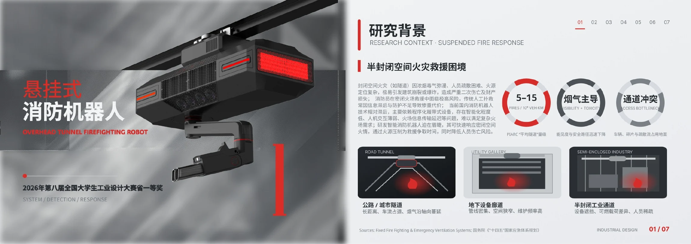
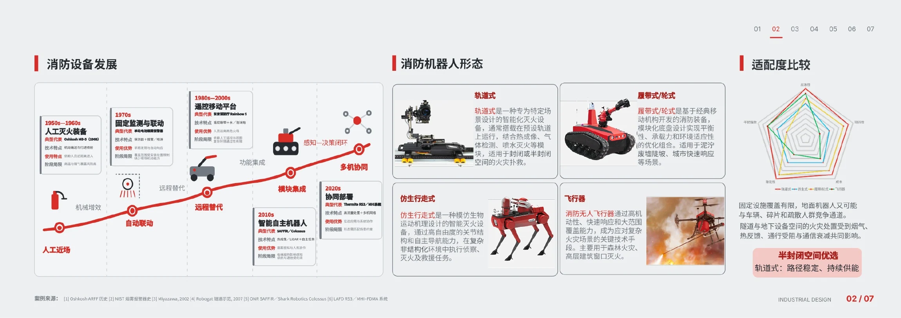


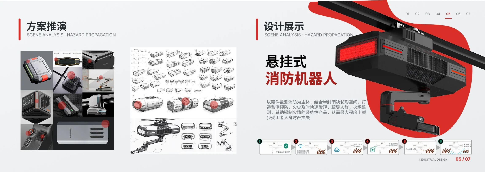


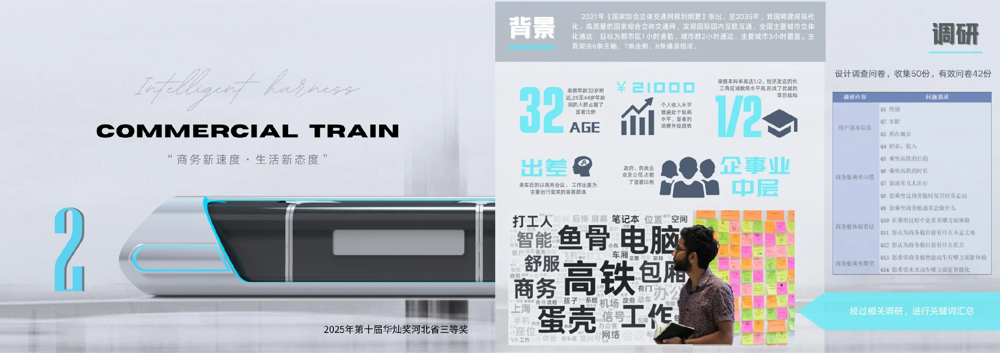
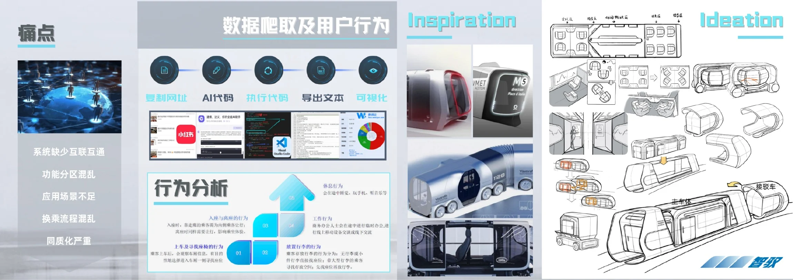


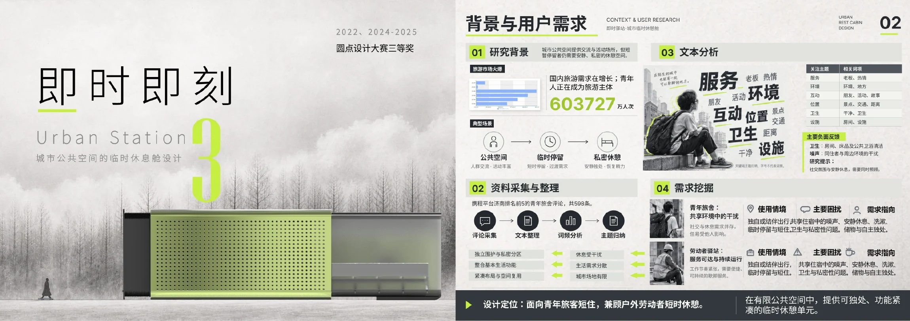


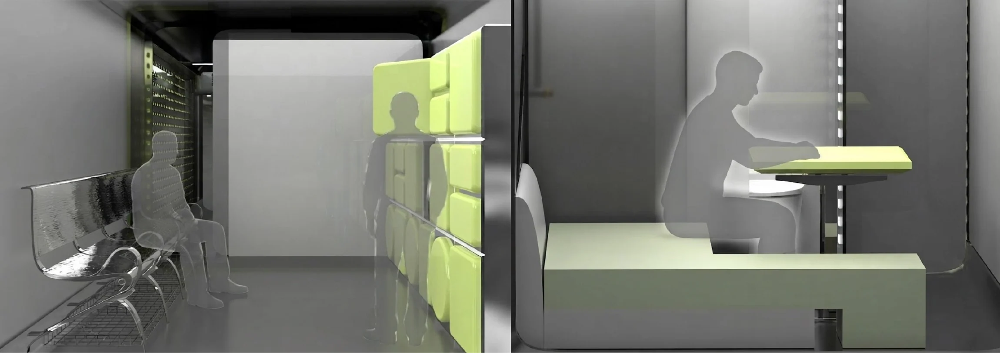
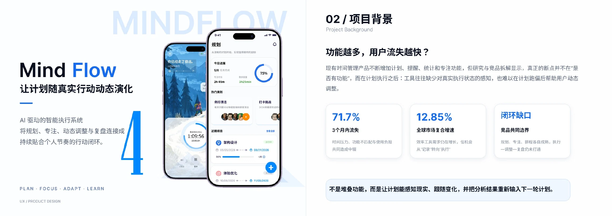


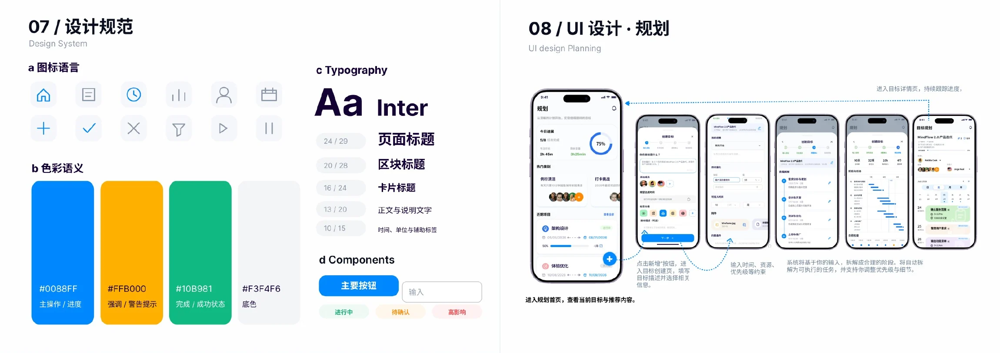
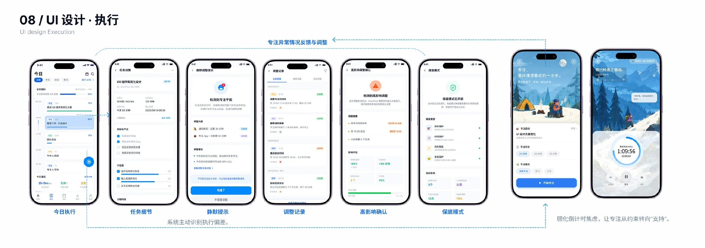
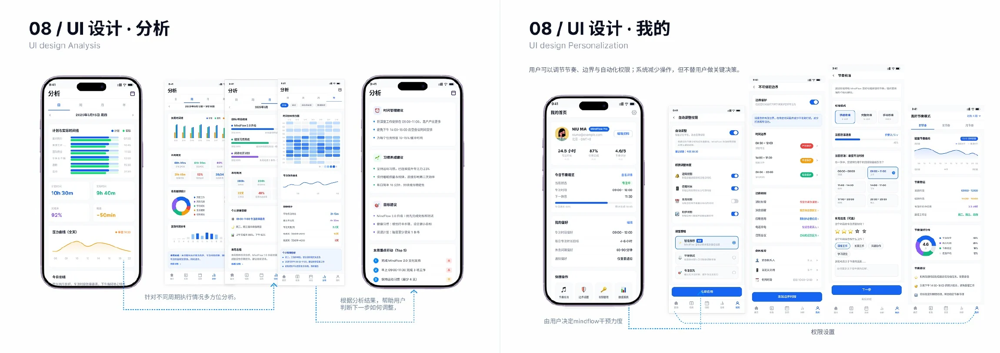
研究生 · 用户研究 · 包容性设计
通过情境实验观察公共自动体外除颤器（AED）使用过程中的受阻行为，梳理设备与交互流程的设计需求。
从包容性设计视角分析公共急救设备的使用门槛，关注使用者在完成设备操作任务时遇到的困难。
通过情境实验记录用户行为，结合定量指标和语义聚类分析受阻原因，再将行为证据转化为设计需求。


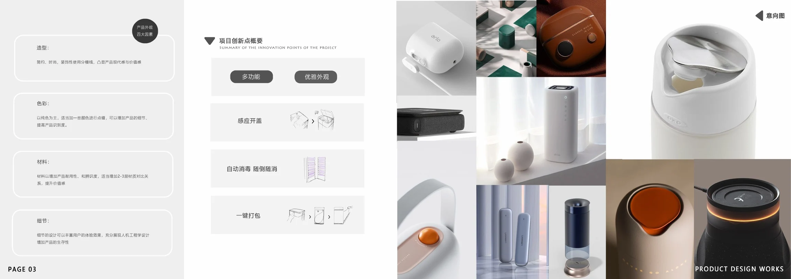


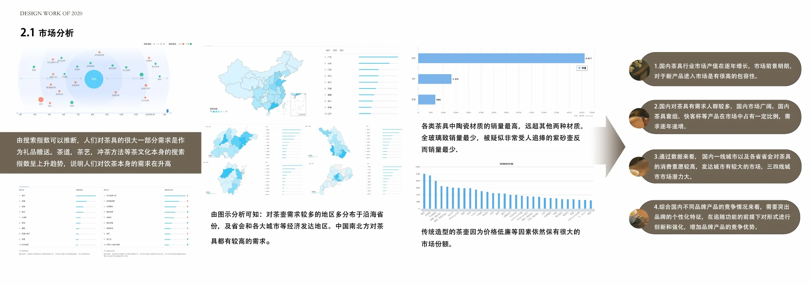

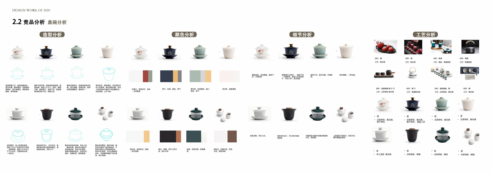


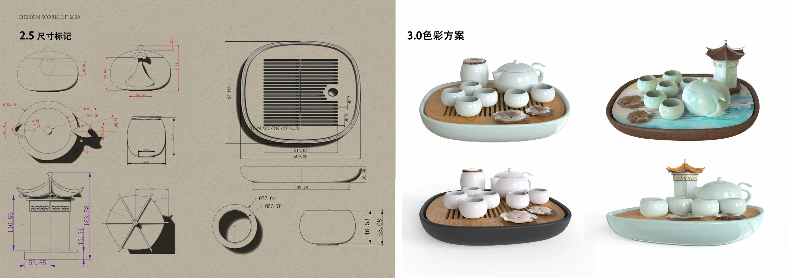
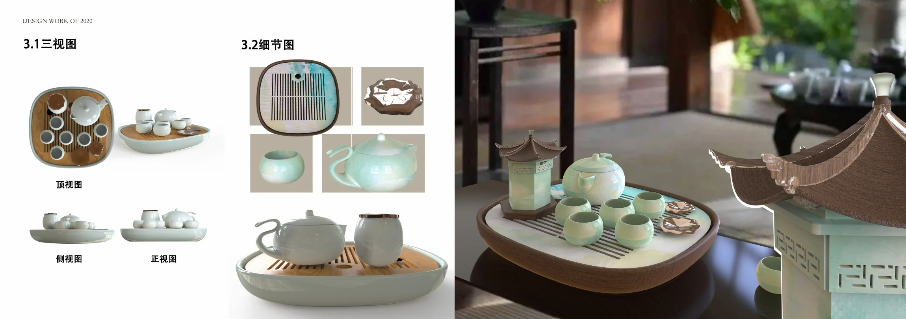

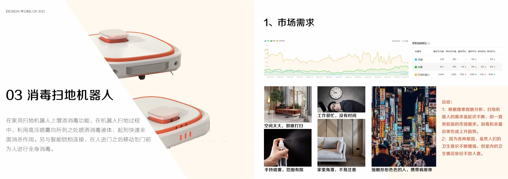
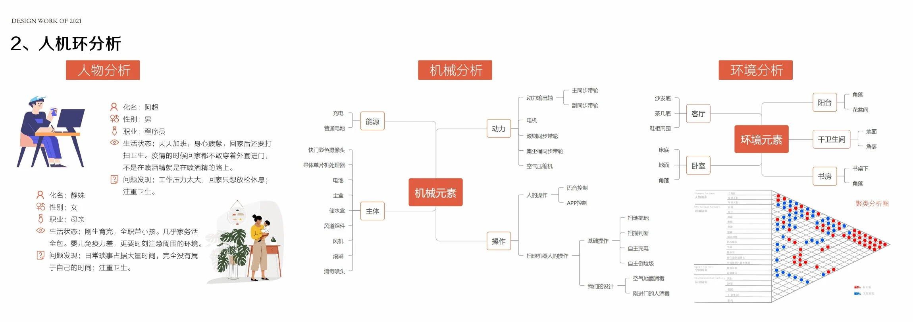
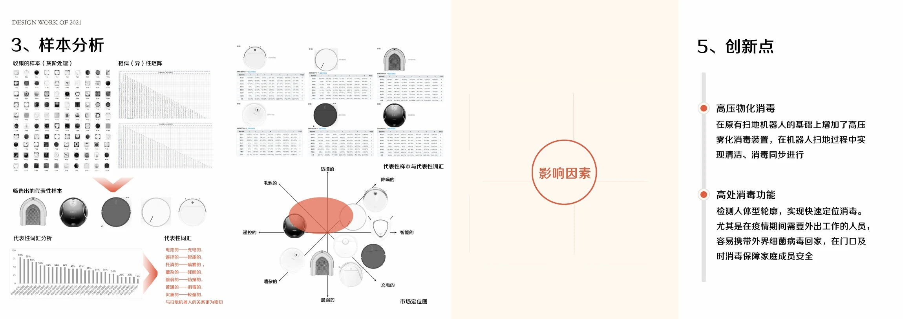


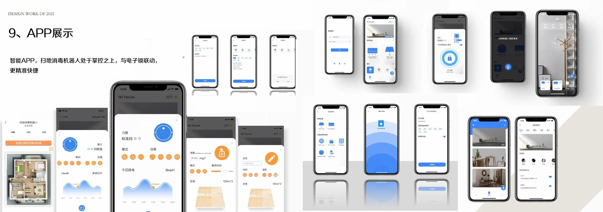

工程设计 · 自动化设备 · 工程方案
将内袋套袋、装料、扎口、转移与外袋封装串联为一条双层包装流程。
箱体先套入内袋并接收物料。内袋扎口后，机械臂提起已封口的内袋，待箱体完成外袋套袋，再将内袋放入外袋中，最后完成外袋扎口。
系统通过滚筒输送线连接装袋与扎口工位，由机械臂负责工位间的内袋转移。图示为设计方案的设备布置。


How I work
我负责定义问题、核对证据并作出设计判断。AI 协助整理材料、拓展备选方案和准备验证。